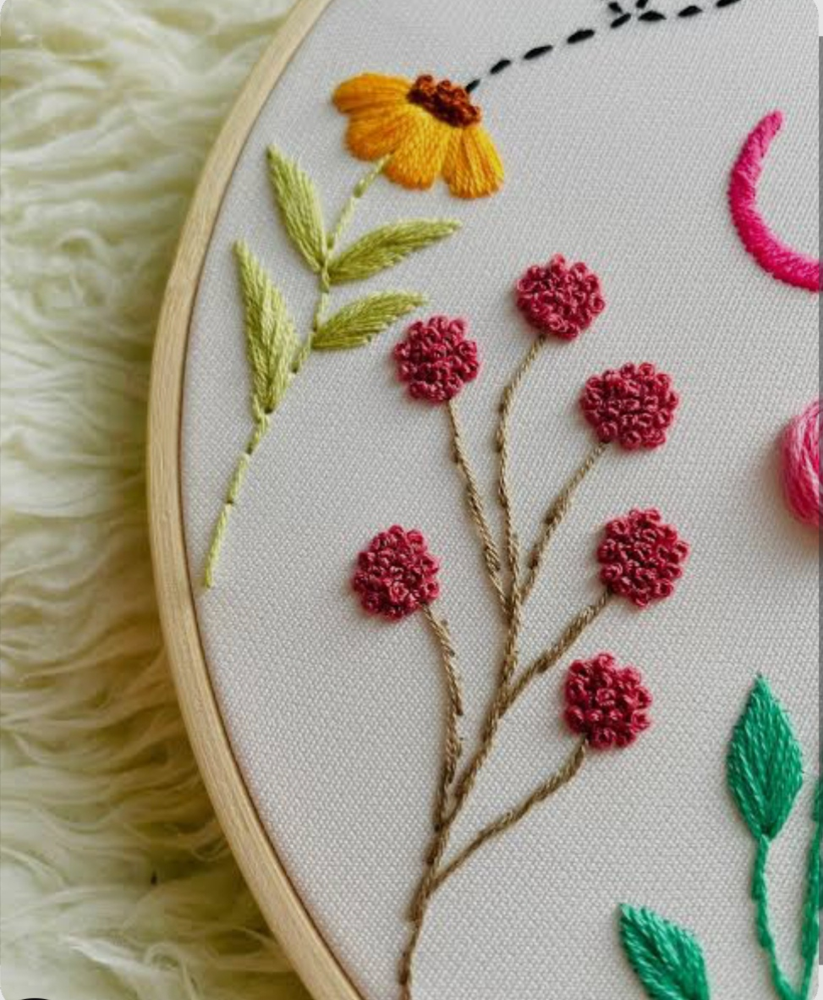

تصميم الأزياء

يهتم بابتكار موديلات وتصاميم الملابس الحديثة، وتكمن أهميته في مواكبة خطوط الموضة والتعبير عن الذوق العام والرقي.
القص وتجهيز القماش

يركز على إعداد الباترونات وقص الأقمشة بدقة، وتكمن أهميته في ضمان الملاءمة الصحيحة وتقليل الهدر في الخامات.
التشطيب والتطوير

يعنى باللمسات النهائية وجودة الخياطة والتطريز، وتكمن أهميته في رفع قيمة المنتج النهائي وجعله جاهزاً للتسويق الاحترافي.